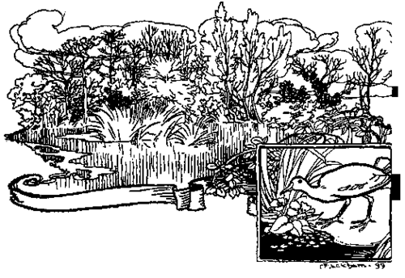

General Preface
Description
This section is from the book "Fly Fishing", by Sir Edward Grey. Also available from Amazon: Fly Fishing.
General Preface
IN bringing the Haddon Library to the notice of the public, an explanation from me of its scope and aims would seem necessary. Probably more literature in relation to British sport, natural history, and country life has appeared during the last decade than has been produced at any previous time. Several excellent series of illustrated books, dealing with sport in its various branches, have been published during that period, and may seem at first sight to largely cover the ground which the editors hope that the Haddon Library will occupy: whilst the delightful writings of such authors as Mr. Warde Fowler and "A Son of the Marshes," among many others, have brought home to a multitude of readers the fact that, in spite of the growth of cities and the reclaiming of wild and waste places, there still exist in this country abundant opportunities for those who are wise enough to study and take delight in natural history.
If therefore this Preface should somewhat overstep the usual limits, my apology must be that the editors are desirous of making quite clear the position which the Haddon Library will aspire to take in the already extensive field of literature bearing on English country life. They hope that the Haddon Library will not only help to fill up such gaps as there may be in the mass of practical information on wild creatures and on sports, contained in the books already published, but also that its contributors will succeed in describing their different pursuits with the true sympathy of those who love the open air, and who decline to regard sport solely from the destructive point of view, whilst greatly valuing it as a healthy feature of our country life.
Almost every kind of sport and athletic exercise has been ably described from the technical standpoint by the many experts whose books have been published of recent years. The best methods of obtaining the best results have been so fully stated that one feels one ought to be able to-become an accomplished shot, fisherman,, bicyclist, horseman, and indeed all-round sportsman, merely through the study of these works ! How to remain on a horse : how to throw a fly : how to crumple up the highest pheasant—have not all these and other arts been set forth by many an accepted authority ? Indeed in various series of sporting books, each branch of these subjects-has been admittedly written of in a tutorial and educational spirit. As I have intimated,, the Haddon Library, while by no means neglecting this aspect of the matter, is not at all intended as a series of technical books.
Numerous pens have been engaged during the last few years on the subject of fly fishing, but the editors feel sure that the volume by Sir Edward Grey, with which the Haddon Library opens, will not be regarded by anglers as superfluous. Gardens and gardening, too, are to be treated of, and will again receive the attention of one who has never yet failed to enrich English literature when he has taken up his pen to write on the well-loved theme.
Much indignation has been aroused of late years by the destruction of wild creatures often wrongly classed as vermin by game preservers and keepers, and as this is a subject which will no doubt be touched upon in one or two volumes of the Haddon Library, I take the opportunity of saying a few words about it. The wisdom and humanity of preserving English wild birds are becoming very generally admitted, and I am glad to think that from time to time steps have been, and are being taken, to educate people on this question. The public are, I believe, beginning at last to really understand and appreciate the usefulness and the beauty of the birds, resident and migratory, which delight us by their songs and plumage. Many landowners now issue strict orders to their keepers and woodmen to prevent the nests of wild birds being despoiled, and forbid the ruthless destruction of the birds themselves.
Of course I am bound to admit that the over-abundance of any grain or fruit devouring species is certainly not a good thing; but I trust that the farmers and rural population generally will see that, as a matter of fact, nearly all our smaller wild birds deserve protection by reason of the vast numbers of insects and grubs upon which they feed, thereby helping largely to preserve grain crops, fruit and vegetables.
This also applies to some of those species of birds which keepers have hitherto regarded as harmful to game by destroying eggs or young. Owls were commonly singled out for slaughter. Now, an owl may occasionally seize a young pheasant or partridge; but, whether it be the white or the brown owl, its usual food consists principally of rats, mice, moles, with beetles and other insects. In fact the value of the owl cannot be better stated than in the words of Mr. Morris—" He who destroys an owl is an encourager of vermin." Hawks have suffered severely at the hands of both sportsmen and keepers. " Shoot it ! it's a hawk," is a shout often heard during a day's shooting. Now if the hawk happens to be a kestrel it is almost a crime to kill it ; for the kestrel is a vermin-destroying bird, and but rarely attacks game. It lives on mice and insects, such as beetles and caterpillars, and consequently its life should be spared. Those beautiful birds, jays and magpies, do undoubtedly poach a little ; yet surely their total extermination would be a grievous error on our part. On none of the winged inhabitants of this country is more marked and brilliantly coloured plumage to be seen than on the jay and magpie, whilst the quaint flight and notes of these birds add much to the interest and variety of our woodland scenes.
It may be asked which is the bird that is really most destructive to the eggs and young of pheasants, partridges, grouse, etc. ? It is, I believe, the carrion crow. One of the most capable and knowledgeable head keepers I know—he has had fifty years of keepering—writes to me : "I consider the carrion crow the most destructive bird for game, eggs, and young birds. The magpie is equal in destroying eggs, but I never knew one take young birds." In this view I concur.
In regard to vermin traps, I hope that the knowledge as to which are the most humane ones to use will continue to increase ; and that before long so infamous a contrivance as the pole-trap will be a thing of the past.
March 1899.
I have long exceeded the bounds of the space which a Preface should occupy, and in conclusion shall only say that if these books succeed in imparting some new ideas, and in making some fresh suggestions to those who take an interest in the country life and sports of Merry England, or better still, convert people who have hitherto not regarded these country pursuits in a favourable light, I shall feel that the Haddon Library has gone a long way towards attaining the ends for which it was designed.
GRANBY.

Continue to: